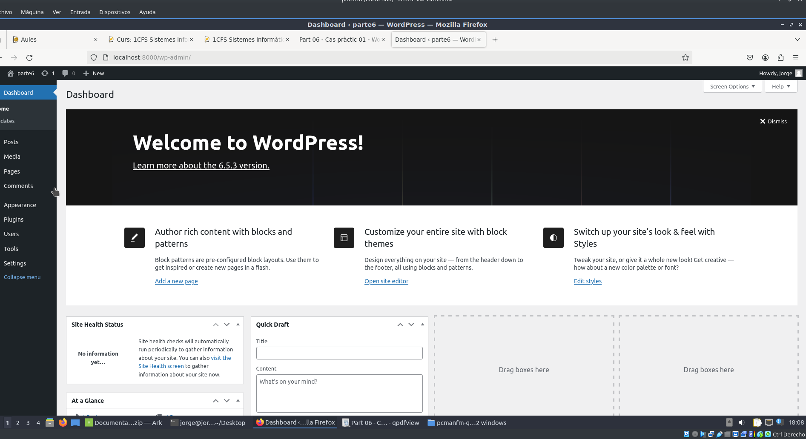
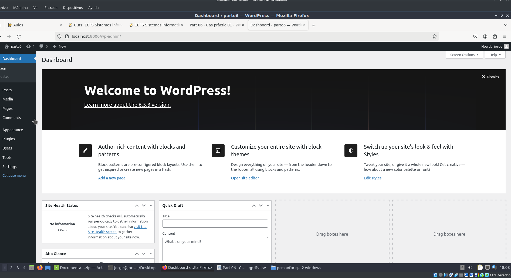

En esta práctica trabajaremos con la herramienta DRBL e instalaremos imégenes ISO a equipos clientes mediante el método multicast.
El objetivo de esta memoria es aprender a crear utilizar la herramienta DRBL utilizandola para enviar la imágen ISO a varias máquinas cliente utilizando el método multicast.
Parte 1Parte I: Crear una imagen a través de DRBL (Clase)
Creo el segundo disco en VirtualBox. Y luego lo monto mediante la terminal.
Parte 2Parte II: Clonar la imagen en al menos un equipo a través de la red interna
Vuelvo a arrancar la MV con DBRL. Pero ahora entro a clonezilla server.
Parte 3Parte II: Clonar la imagen en al menos un equipo a través de la red interna

Parte 4Parte II: Clonar la imagen en al menos un equipo a través de la red interna

Enlace de mi docker hub: https://hub.docker.com/repository/docker/jorge598/practica_docker_hub/general
Parte 5Parte II: Clonar la imagen en al menos un equipo a través de la red interna


Parte 6Parte II: Clonar la imagen en al menos un equipo a través de la red interna
 

Parte 7Parte II: Clonar la imagen en al menos un equipo a través de la red interna


Cometí dos errores a lo largo de la práctica. El primero fue seleccionar lost found como destino de la imágen copiada en la primera parte, pero lo solucioné al mover la imágen. El segundo fue cuando no dí suficiente espacio a las máquinas cliente para poder completar el proceso de multicast. Sin embargo, no conseguí instalar la imágen en los equipos clientes debido a que no complete el proceso final de instalación de la imágen mediante multicast.
Me ha gustado la práctica, pero es una lástima que no la llegué a terminar. Comprendo que este metodo de copiar imágenes ISO a otros equipos es muy útil, porque te permite instalar SOs de muchos equipos mucho más rápida que hacerlo 1 en uno.